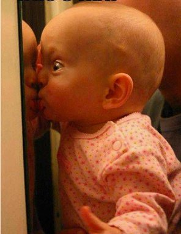

--Amanda Gefter
"Without the projection of the mind, the world cannot exist."
--Jac O'Keeffe
"Reality is only a Rorschach ink blot."
--Alan Watts
“I know this is true because I directly experienced it,” said the random guy on Facebook.
Well. Can't argue with that, can we? I mean, he experienced it. So it must be true.
We'l just ignore if our own personal experience happens to clash with his personal experience.
Or more likely, we'll argue with him about whose is right. (Hint- it's definitely ours.)
Yes we do all love that ol’ personal experience.
Everything we think is real is based on it. For most everyone, first-hand knowledge is the final arbiter of reality and Truth.
Even though by definition, "personal experience" means, specific to Me, with all my unique slants, perspectives, conclusions, information and thoughts.
Y’know, person-al.
There are the colors and shapes seen in our eyeballs, sounds heard in our ears, touch experienced in our fingertips, our skin receptors. There are emotions felt in our bodies, aided and interpreted by thoughts we also call ours.
Let’s face it, we only know what’s what when it comes through our filters.
Otherwise, we can't know anything.
At all.
Which means that all experience is always specific only to us. Which means it has nothing to do with objective Truth.
And when we presume that it does, we’re basically saying, “My way is the way. What I encounter is all there is.”
Which is only just a little arrogant. Ok maybe a lot arrogant.
Because this know-it-all-ness, based strictly on what we see, hear and feel personally, is kind of breathtaking.
I mean here we are experiencing, and somehow we come to believe that these particular-to-us happenings prove something about the “real world,” a supposedly fact-based, unbiased, and independent real thing.
We're quite certain of this.
Even though, when we do perceive anything, those perceptions are still only our eyes, ears, fingertips, experiencing.
Personal truth. Not objective truth.
Can you say "projection," boys and girls?
It’s not like this is just sometimes, either. No, we’re 100% projecting our personal experience at all times, non-stop.
And calling it, "reality."
So for those who enjoy being important or special- which is pretty much everyone - at least this is good news.
Because it means that we were right- we are the center of the universe; it is all just us projected out into everything. We are necessary. We matter.
Whooo hooo! We knew it!
Oddly enough though, it can also be good news for those who are interested in the idea of Enlightenment and No-Self, too.
Because when we begin to see that our Very Important Personal Experience is only a viewpoint, and that all of our, “Of course reality is real!” certainty can only ever be projection…
Our usually-strong sense of being an individual with a translatable experience may just begin to get wispy.
Because when we don’t lug around all the limitation that comes with “objective reality,” the sense of self may begin to feel lighter and less concrete.
Now of course I’m not saying that any of this is ever the least bit necessary. It’s just that many lovely Mind-Tickler readers happen to be curious about this particular individual-not-individual, self-not-self, thing.
And as a doorway in, the consideration of what is real vs what is our biased, deceptively separate experience, can be very enlightening.
Even though no amount of considering will ever reveal what is actually real.
Because we will never be able to get outside these perceiving machines.
So an undebatable, unalterable Truth which is not tainted by or based on personal experience- something outside the self-
is something we will never know.
Because it can't be known. Not by us little humans, anyway.
Which is fine. We don't need it.
Though that particular Don’t-Know-and-Never-Will enables….
Oh I don’t know.
Who knows?
We’ll never know.
Hey where’d we go?
Click here to watch Judy on Buddha at the Gas Pump
Click to watch Judy and Walter have fun chatting about about
nonduality, the self, consciousness, awareness, free will
and other light and breezy stuff
Judy And Robert Saltzman talk nonduality
and again: https://www.youtube.com/watch?v=7fv_vsvaejs
and again: https://www.youtube.com/watch?v=3DAn8Rqg3I0
"The world presented to us by our perceptions is nothing like reality.
Evolution drives truth to extinction.
We’ve been shaped to have perceptions that keep us alive, so we have to take them seriously. If I see something that I think of as a snake, I don’t pick it up. If I see a train, I don’t step in front of it. I’ve evolved these symbols to keep me alive, so I have to take them seriously. But it’s a logical flaw to think that if we have to take it seriously, we also have to take it literally."
--Donald Hoffman
"The world doesn't exist. It's all an illusion. It never did exist. It's all the reflection of a concept. There is No One and Nothing. It's literal. Are you ready to live without a world? Is that what you really want? Are you willing to lose the moon?"
--Byron Katie
